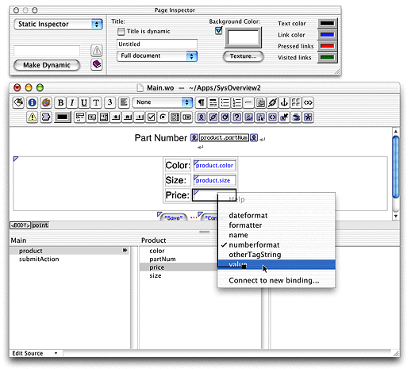

| PATH |

You use WebObjects Builder to edit your application's components. WebObjects Builder allows you to graphically edit a component's HTML template. If you prefer, you can switch to the source view from which you can edit the template as an HTML text file. WebObjects Builder also allows you to graphically bind the dynamic elements on your template to variables and methods within your code; you simply drag from a variable to the dynamic element as shown in Figure 4-5.
Figure 4-5 WebObjects Builder
